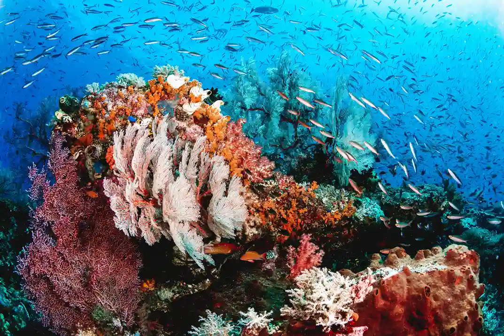
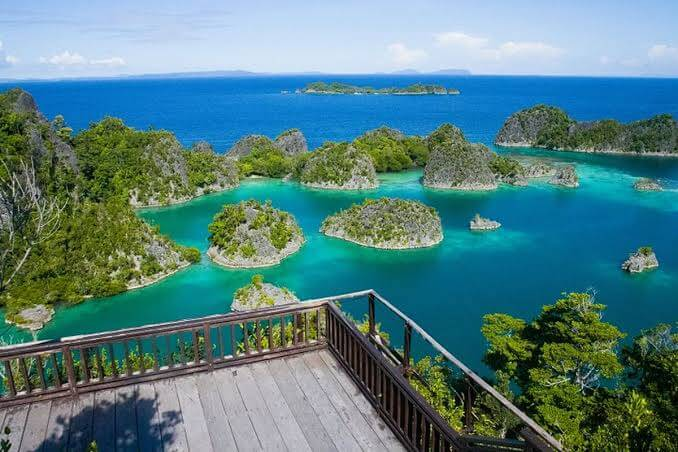
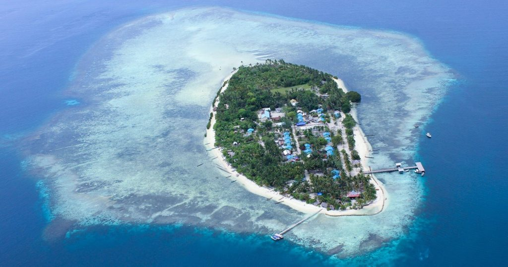
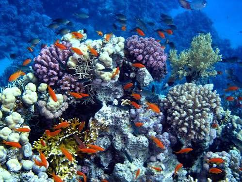
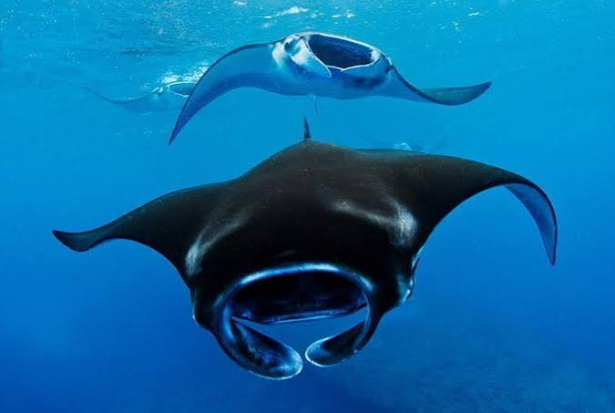
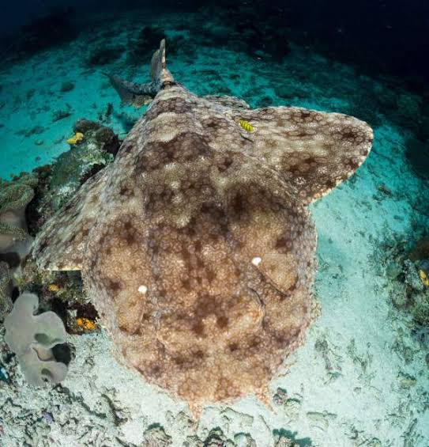
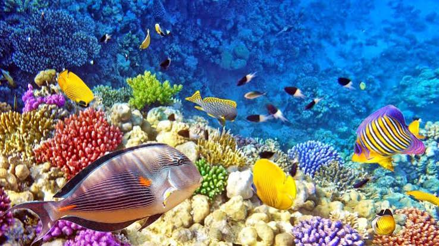

Explore over 1.500 islands in one of the most biodiverse
marine ecosystems on Earth

Snorkeling atau diving di Cape Kri — terkenal karena rekor jumlah spesies ikan terbanyak yang pernah tercatat dalam satu kali dive.
Island hopping ke Piaynemo/Wayag — naik ke viewing deck buat liat pemandangan gugusan pulau karst yang ikonik itu, plus bisa lompat tebing ke laguna.
Kunjungan budaya ke desa Arborek/Sauwandarek — bisa lihat kehidupan lokal, belajar kerajinan tradisional, dan nonton tarian budaya.Raja Ampat memiliki lebih dari 1.600 spesies ikan dan memiliki lebih dari 550 spesies karang. Konservasi laut




Manta Sandy — spot manta paling accessible di dunia — satu-satunya major manta dive site di dunia yang bisa diakses snorkeler tanpa sertifikasi diving, kedalaman cuma 5-8 meter. Luxury Raja Ampat
Batuan tertua di Indonesia — Raja Ampat punya formasi batuan tertua di Indonesia, umurnya sekitar 443,8 sampai 358,9 juta tahun (era Silurian-Devonian), hampir sepersepuluh umur bumi. UNESCO
Lukisan gua prasejarah — di tebing-tebing kapur curam dan gua pesisir, ditemukan lukisan gua yang dibuat manusia purba ribuan tahun lalu. UNESCO
Sasi Laut — ritual adat masyarakat lokal buat menandai buka/tutup musim panen laut, daerah tertentu "ditutup" sampai waktu yang ditentukan biar hasil lautnya melimpah pas dibuka lagi. Prosesnya ada dua tahap: "tutup sasi" (mulai larangan menangkap selama 6-12 bulan) dan "buka sasi" (ritual syukur sekaligus izin buat mulai panen bareng-bareng). Praktik ini bukan cuma tradisi turun-temurun, tapi sekarang diakui sebagai salah satu bentuk konservasi laut modern yang efektif. Universitas Indonesia